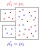

8.多成分・多相系の平衡
複数の物質と複数の相がある場合の平衡条件。
水と気体の混合
複数の物質が混合している場合、平衡状態はどうなるのだろうか。まず、水と窒素気体（別に窒素でなくてもよい）を用意する。1つの容器に仕切りを入れ、一方に水を、もう一方に窒素気体を入れる。その後、仕切りを外すと、水の一部は水蒸気になり窒素と混合する。また、窒素もがわずかだが水に溶ける。知りたいのは、この時の平衡状態である。窒素がなければ、前章と同じ状況である。
制約条件は、以下4つである：
エネルギー保存容器は変形しない水の総量が一定窒素の総量が一定
は水や水蒸気の分子数、
は窒素の分子数を表す。この条件式の右辺の4つの定数が与えられたときに、左辺の8つの量を特定したいわけである。未知数8つに対して、制約条件は4つである。後は、これらの制約条件の下でのエントロピーの極大条件から4つの条件を見つければ、全ての未知数を特定できる。ただし、系全体のエネルギー
とエントロピー
を、どうやって測定から求めるかを考える必要がある。
この章では、まず平衡条件を書き下し、その後、エネルギーやエントロピーの測定法について述べる。
多成分・多相系の平衡条件エネルギーの測定エントロピーの測定
8.1多成分・多相系の平衡条件
この節では、エネルギー
とエントロピー
がすでに分かっているとして、平衡条件を書下す。
を実験的に求める方法については、後の節で扱う。
平衡条件：式()
極大条件は、制約条件
のもとで
である。また、各相のエントロピーは
の関数なので、その微分は
である。
を水の化学ポテンシャル、
を窒素の化学ポテンシャルという。
この式(
)を式(
)に代入した後、制約条件を使って、液体側の微小量を消すと、以下のようになる：
（
）
最後の式の微小量は任意の値をとれるので、各項の係数はゼロになる。よって、以下が成り立つ：
前章と同様に、温度・圧力・化学ポテンシャルが等しくなっている。
8.2エネルギーの測定
ここでは、エネルギー原点の任意性は2のパラメータだけであることを述べる。
1つの相のエネルギー方程式の測定
まず、1つの相だけに着目することとし、
といった表記は省略する。ある平衡状態に対し、そのエネルギー
が決まるには、エネルギー方程式
が、測定から決定できればよい。
エネルギー方程式において、粒子数
を固定して、
だけを変化させたときのエネルギー変化は測定可能である（第2章で扱ったものと同じ）。この時、原点の取り方に任意性があるわけだが、今の場合、
ごとにその任意性が発生する。要するに、エネルギー方程式には
の関数を足す任意性が残る。（エネルギーは示量性を持つので、実際には粒子数密度
の関数である。）
もう少し詳しく言うと、エネルギーは示量性を持つので、任意の
に対して原点を任意にとれるわけではない。示量性により
が成り立つ（小文字の
は大文字に対応する量の密度）。よって、
に対して、
の関数を足す自由度がある。さらに、
を変えることにより、比
を保つ任意の状態に移行できる。よって、
が異なる
に対して原点の取り方の任意性を持つ。結局、
に対して
の任意の関数を足す自由度が残るわけである。
この任意性を減らすには、エネルギーを変化させずに粒子を混合することが可能であることに着目すればよい。実際、仕切りを入れた容器の一方に
を、他方に
を入れた状態で、仕切りを外して混合する過程では、エネルギーは変化しない。よって、
または
だけの1成分気体のエネルギー方程式から、混合気体のエネルギー方程式の原点が決まる。第6章で述べた様に、1成分気体のエネルギー方程式の原点の任意性は1点だけである。
よって、原点の取り方の任意性としては、それぞれの1成分系の原点の取り方の2つだけとなる。この2つの値を決めてやれば、任意の平衡状態のエネルギーが実験的に決まることになる。
複数の相のエネルギー方程式の測定
複数の相が存在する場合、例えば、液相にエネルギーを加えて気相に変化させることを考えれば、その時に要したエネルギーから、気相のエネルギーが原点の取り方も含めて決まる。よって結局、原点の取り方の任意性は、一方の相の任意性のみである。従って、今の場合2つだけである。この2つのパラメータを適当に決めればエネルギー方程式が一意的に決まる。
8.3エントロピーの測定
エントロピーの測定
1つの相のエントロピー
の関数形を測定から決定するには、式(
)：
（再掲）
を使うことになる。この式の右辺の全ての係数を測定から求めたい。それができれば、適当な基準点
における
の値を決めてやる
（＝原点の取り方を決める）ことにより、この微分方程式を解くことができ、
の関数形が決まる。実際には、
は、液相と気相の2種類あるので、両方の相で同じことをすればよい。
さて、式(
)の右辺において、自明でないのは、化学ポテンシャル
である。まず使えるのは、ギブス・デュエムの式：
である。ここで、気相と液相が平衡状態になっている場合を考える。すると、式(
)が、両方の相で成り立ち、加えて、平衡条件(
)：
が成り立つ。よって、4つの条件式が得られる。未知数は、それぞれの相の
の4つなので、解くことができる：
この右辺には
含まれているが、式(
)を解く分には、逐次的に求めていけばよいので、問題ない。これによって、様々な
の場合にエントロピーを求めることができる。エントロピーの原点の自由度は、各相に対して存在するので、合わせて2つである。なお、この方法が使えるのは、「成分数」＜「相の数」の場合のみである。
半透膜を用いたエントロピーの測定
上述のようにすれば、エントロピーの関数形を測定から決めることができる。ただし、この測定を行うには、多成分・多相系の平衡状態を測定する必要がある。冒頭で問題にしていたのは、その平衡状態を知りたいということだったので、順序が逆になっている。
そこでここでは、別の方法でエントロピーを測定する方法について述べる。まず、
だけの単成分の場合、エントロピー
は、第6章で見たように、微分方程式
を使って測定から決めることができる（原点の取り方に任意性がある）。
だけの単成分の場合のエントロピー
も同様である。（
と
は関数形が異なる。添え字の数字で区別する。）

単成分系のエントロピー
から、混合系のエントロピー
を実験的に求めたい。そのためには、一方の成分のみを通す半透膜が存在すればよい
（「
成分だけを通す半透膜」と「
成分だけを通す半透膜」）。単成分のみが入った容器と混合系の容器を、半透膜を隔てて接触させれば、両方の容器の化学ポテンシャルが一致する
（右図）。単成分系の化学ポテンシャルは既知なので、複合系の化学ポテンシャルも求まることになる。
（温度計によって温度を測るように、単成分系を「化学ポテンシャル計」として使えるというわけである。）後は、式(
)を使えば、複合系のエントロピーが決まる
（エネルギー方程式は求まっているとしている）。
この方法であれば、3成分以上の場合にも使える。ただし、そのような半透膜が実際に存在するかという問題がある（原理的にそもそも存在するのか、存在したとして技術的に作れるのか）。